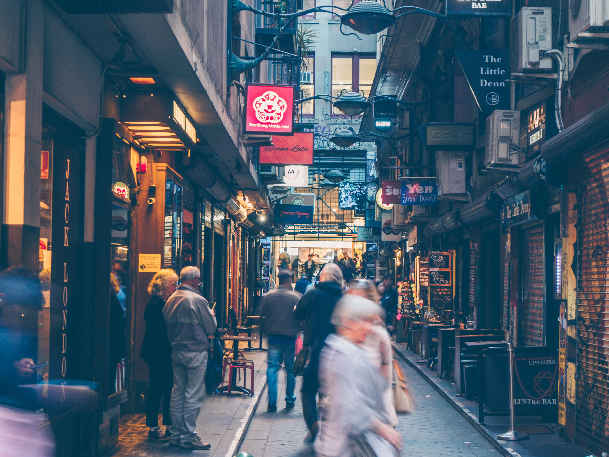

01 / PLACESYD
Right in the city centre.
Find the campus on George Street, surrounded by Sydney's commercial, cultural and shopping districts.

At home on George Street, Laneway Sydney puts you in the middle of one of the world's most energetic cities—with new ideas, industries and experiences on the doorstep.
Laneway's Sydney campus sits on George Street, where the CBD's business, creative, retail and food precincts meet. It is a location that makes it easy to look up from your studies and see what's possible.
Come curious. Meet people with different perspectives. Test ideas against the real world. Your campus is not a place apart from the city—it is your way into it.
A campus should connect you to more than a classroom. Here is what makes Sydney different.
Find the campus on George Street, surrounded by Sydney's commercial, cultural and shopping districts.
Nearby train stations, light rail and city buses make George Street an easy place to reach.
Step outside into galleries, food, retail and the constant movement of a truly global city.
Bring the outside world into your learning. Work with real briefs, exchange perspectives and build the confidence to turn ideas into action.
Explore the Laneway way ↗Study, connect and step outside. Life at Laneway Sydney is shaped by the people and place around you.
SYDNEY / GEORGE STREET
 YOUR OWN DIRECTION
YOUR OWN DIRECTION
Your day starts at Laneway and extends wherever curiosity takes you next.
George Street puts the city within easy reach. Arrive by train, tram or bus and start your day in the centre of things.
Take a break and use the city as your backdrop—whether that means a new lunch spot, a quick walk or a fresh conversation.
Explore the nearby galleries, shopping precincts and waterfront, then bring a new perspective back to your work.
Laneway Sydney is on George Street in the CBD, with several ways to arrive by public transport.
Ready to make your next move? Start an application or ask the team about visiting the Sydney campus.
Take a look at Laneway's other Australian campus.
